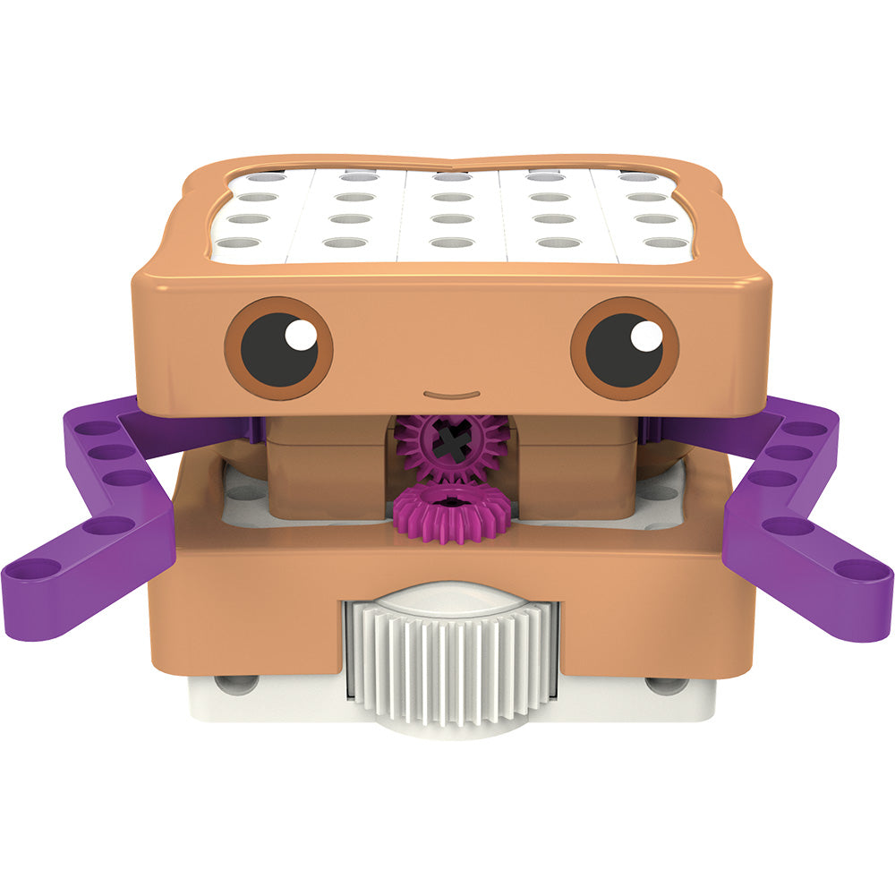
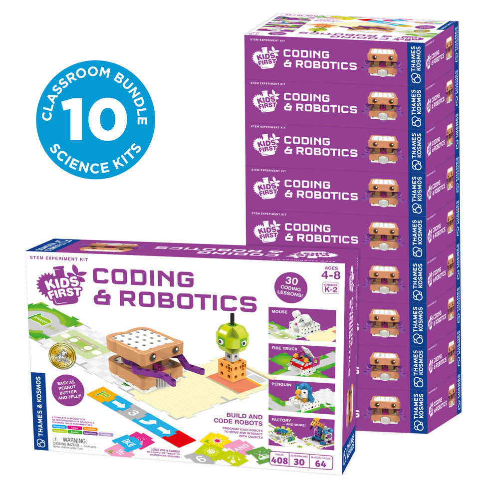
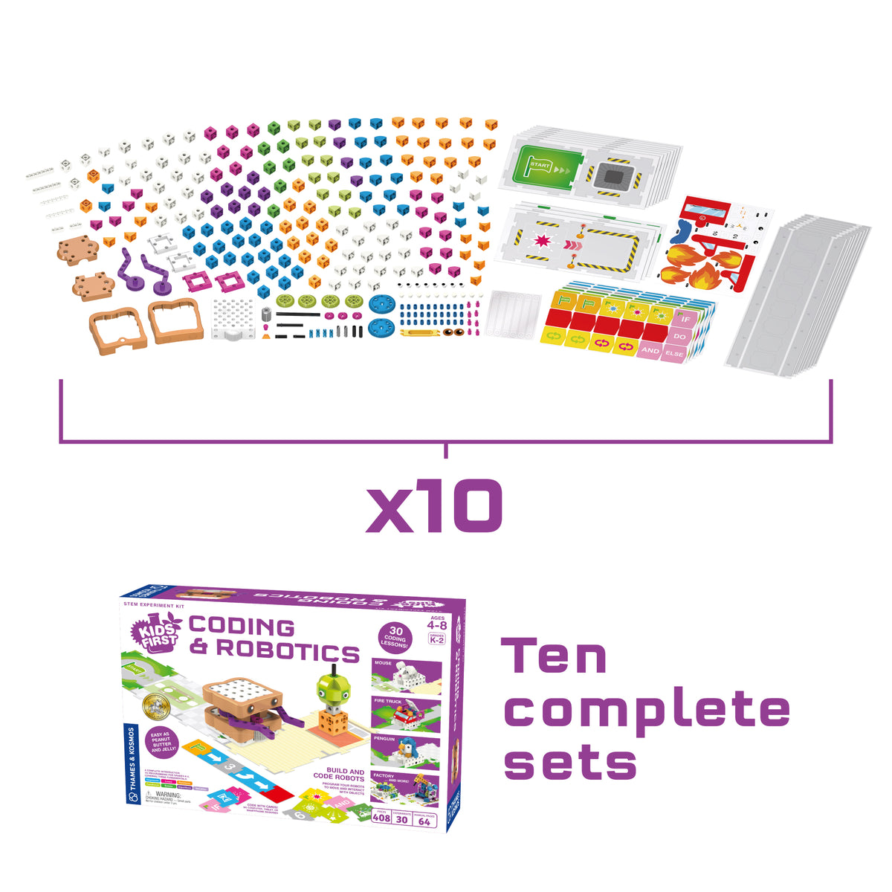

想清楚，再出發Make a plan
把「我想要」拆成一小步、一小步。以圖像卡與實體地圖學習，不需要閱讀程式碼。Turn “I want to…” into small, clear steps. Use picture cards and physical maps, with no written code to read.
文化邏輯探索課Stories, Maps & Robots
一個故事、一張地圖、一個機器人。孩子和夥伴一起排出步驟、試試看、改一改，把腦中的想像變成看得見的行動。A story, a map and a little robot. Children plan a path with a partner, try it, make a change and watch their ideas come to life.
預計於 North Kirkland Community Center 開課；日期與場地尚待確認。Proposed at North Kirkland Community Center. Dates and venue arrangements are not yet confirmed.

孩子的第一位程式小夥伴。A first coding companion for little thinkers.
教材照片來源：Thames & Kosmos ↗Product photo: Thames & Kosmos ↗A LITTLE SPACE TO THINKA LITTLE SPACE TO THINK
從孩子自己的故事出發，練習在 AI 時代同樣重要的能力：組織想法、理解結果、和別人一起解決問題。Start with a child’s own story and practice skills that matter in an AI-filled world: organizing ideas, understanding outcomes and solving problems together.
把「我想要」拆成一小步、一小步。以圖像卡與實體地圖學習，不需要閱讀程式碼。Turn “I want to…” into small, clear steps. Use picture cards and physical maps, with no written code to read.
預測機器人會走到哪裡，再觀察結果。走錯了，就找出原因，改一張卡再試。Predict where the robot will go, then observe. If it takes a wrong turn, find a reason, change a card and try again.
從家庭、社區與文化故事取材，練習輪流、聆聽，說出「我為什麼這樣設計」。Bring family, neighborhood and cultural stories into play. Take turns, listen and explain a design choice.
50 MINUTES, ONE SMALL ADVENTURE50 MINUTES, ONE SMALL ADVENTURE
操作角色至少交換一次，讓每個孩子都有排卡、測試與說明的機會。Partners switch roles at least once so every child can arrange cards, test and explain.
認識今天的角色與任務。Meet a character and a challenge.
走一走、排圖卡、做預測。Move, arrange pictures and predict.
兩人合作，輪流排卡與執行。Work in pairs; take turns coding and testing.
改一個地方，說明發現。Change one thing and explain the discovery.
零件歸位，帶走一個好問題。Sort the pieces and take a good question home.
OUR CLASSROOM KITOUR CLASSROOM KIT
課堂使用 Kids First Coding & Robotics。孩子以實體指令卡安排步驟，搭配地圖與積木模型，讓機器人執行自己的計畫。Our classroom kit is Kids First Coding & Robotics. Children arrange physical command cards and use maps and building pieces to bring their plans to life.

本課程選用的教材組合。課堂採兩人共用一套、輪流操作；教材留在教室使用。The selected classroom bundle. Partners share one kit and take turns; kits stay in the classroom.

先排出想法，再讓機器人試走。從順序、轉彎與重複開始，練習觀察、修正與分享。Arrange an idea, then let the robot try it. Begin with sequences, turns and repetition, practicing observation, revision and sharing.
產品照片來源：Thames & Kosmos 官方產品頁。點選照片可查看大圖。Product photos: the official Thames & Kosmos product page. Select a photo to view it at full size.
查看官方教材介紹 ↗Explore the official classroom kit ↗SEE IT IN ACTIONSEE IT IN ACTION
從指令卡到地圖，看看這套教材的實際操作。點選播放即可觀看，也可以切換全螢幕。Watch the kit in action with physical command cards and a map. Select play to watch, or switch to full screen.
THE LEARNING YEARTHE LEARNING YEAR
全年 36 堂：學年 30 堂＋暑期延伸 6 堂。每梯次 6 堂，先從第一梯試辦開始，再依孩子的投入與學習情況續開。36 sessions across the year: 30 during the school year plus 6 optional summer sessions. Enroll by six-session block, beginning with the pilot.
從「先做什麼」開始，練習方向、順序、輪流與除錯。Start with what comes first: direction, sequencing, turn-taking and debugging.
以身體扮演機器人，排出 3 張動作卡；能分辨想法與明確指令。Act as a robot and arrange three action cards; distinguish an idea from a precise instruction.
在地圖排出 3–5 個步驟，執行前先指出預期終點。Plan a 3–5-step route and point to the predicted destination before running it.
畫出家、圖書館與公園；說出一段包含轉彎的路線。Draw a home, library and park; explain a route that includes a turn.
用紙製食物圖卡設計兩站配送；能把任務分成兩小段。Use paper food pictures for a two-stop delivery; split the task into two smaller parts.
找出教師預設的一張錯卡，只改一個地方再測試。Find one deliberately misplaced card; change one thing and test again.
和夥伴展示原創路線，說出「我改了什麼、為什麼」。Present an original route with a partner and explain one change and its reason.
把重複的動作找出來，讓迴圈變成摸得到的節奏。Find repeated actions and make loops tangible through rhythm.
以顏色與拍手找出 AB／AAB 規律；預測下一個動作。Use colors and claps to find AB/AAB patterns and predict the next action.
先排重複的動作，再以簡單迴圈取代；執行並比較。Build repeated actions, replace them with a simple loop, then compare the runs.
用紙燈籠地圖重複移動與停頓；指出迴圈的範圍。Repeat moves and pauses on a paper lantern map; identify the loop body.
將相同的送信動作重複 2–3 次；每次輪換操作角色。Repeat a delivery action two or three times, switching partner roles each run.
比較重複次數不同的兩個程式；修正過頭的路徑。Compare two repeat counts and fix a route that overshoots.
自選家庭或想像中的慶祝方式，展示一個有迴圈的路線。Choose a family or imaginary celebration and demonstrate a route with a loop.
練習拆解任務、規劃多站路線，尊重每個人的故事。Break tasks apart, plan multiple stops and make room for different stories.
畫出起點、目的地與障礙；用手指預演後再排卡。Draw a start, goal and obstacle; trace the plan before coding.
選擇三張物品圖卡，把採買路線拆成三段。Choose three item cards and divide a shopping route into three parts.
比較兩條都能抵達的路，說出自己的選擇理由。Compare two successful routes and explain a preference.
以自選的家庭活動編排故事順序，讓機器人演出其中一段。Sequence a chosen family activity and let the robot act out one part.
交換地圖與指令，觀察同伴能否依自己的說明完成。Exchange maps and instructions; observe whether a partner can follow them.
完成三站任務，展示規劃圖與修正後的卡片順序。Complete a three-stop mission and show the plan alongside the revised sequence.
從看見結果到找出原因，逐步加入簡單規則。Move from observing results to finding causes, with simple rules along the way.
在紀錄卡上畫出預測與實際結果；找出第一個不同。Draw predicted and actual results; identify the first difference.
用角色扮演練習「如果有障礙，就改道」；口述規則。Role-play “if the path is blocked, take another route” and explain the rule.
以紙製訊號練習等待與觸發；區分先後與開始條件。Use paper signals to practice waiting and triggering; distinguish sequence from a start condition.
針對失敗路徑提出猜想，只改一張卡並記下結果。Suggest a reason for failure, change one card and record the result.
夥伴測試彼此的方案，用「我觀察到」描述結果。Test a partner’s plan and describe the outcome using “I noticed…”.
完成繞過障礙的任務，展示至少一次測試與修正。Complete an obstacle detour and show at least one test and revision.
以可重用的步驟與數量表徵，完成自己的文化故事。Use reusable steps and number representations in an original cultural story.
為一小段常用步驟命名，先用紙卡重用同一段指令。Name a short routine and reuse it with paper cards.
用代幣記錄已送達的物品數，說出數字代表什麼。Use tokens to track deliveries and explain what the number represents.
畫出角色、目標與三段情節；提出一個能測試的成功條件。Draw a character, goal and three story parts; define a testable success condition.
用教具與紙製場景搭建，保留初版程式的紀錄。Build with the kit and paper scenery; record the first program version.
依同伴回饋改進路線或說明，指出修改前後的差異。Use peer feedback to improve a route or explanation and show what changed.
向家長或同班夥伴示範，說明目標、測試與一次修正。Demonstrate to families or classmates and explain the goal, tests and one revision.
用新的故事重訪核心能力，暑期仍維持每週 50 分鐘。Revisit core skills through new stories, still meeting for 50 minutes each week.
排列出遊準備步驟，交換後檢查有沒有遺漏。Sequence trip preparations and check a partner’s plan for missing steps.
選擇真實或想像城市，在新地圖規劃一條路。Choose a real or imagined city and plan a route on a new map.
把長途故事分段，使用重複步驟完成配送。Split a long-distance story into parts and reuse steps for delivery.
先預測、再測試同伴設計的迷宮；提出一項改善。Predict and test a partner-designed maze, then suggest an improvement.
共同訂定目標並分工，每個孩子負責一段程式與一次測試。Agree on a goal and share roles; each child contributes a sequence and a test.
比較早期與現在的作品，說出自己學會的一種解題方法。Compare early and recent work and describe one problem-solving strategy learned.
季節為完整年度配置範例；若試辦較晚開始，全部順延，不是已核定行事曆。第一梯的 6 堂已包含在 36 堂內；每週三一次，假期與場館休館日不排課。正式日期將依學校行事曆、場地與家庭接送時間排定。暑期另行報名，非全天營隊。Seasons illustrate a full-year sequence, not a confirmed calendar. A later pilot start shifts the sequence forward. The six pilot sessions are included in the 36-session total. Classes meet once each Wednesday, with breaks for holidays and facility closures. Dates will be set around school calendars, room availability and family travel time. Summer is a separate weekly course, not a day camp.
用 3–5 張卡、短路徑、手指預演與口語說明；提供已組裝底座，讓時間留給思考。Use 3–5 cards, short routes, finger tracing and oral explanations. Start with a prepared robot base.
增加多站路線、簡單迴圈與設計紀錄。熟悉核心任務後，再選擇條件、函式或數量的延伸。Add multiple stops, simple loops and design notes. Offer conditions, routines and number extensions after core tasks are secure.
保留一張路線圖、一份卡片紀錄與孩子的一句解釋；觀察規劃、測試、修正、合作與表達。Keep a route map, a card sequence and a child’s explanation. Observe planning, testing, revising, teamwork and communication.
課程使用 Kids First Coding & Robotics 為教材規劃基礎，加入 PecuLab 原創故事與文化任務；不是逐堂照搬原廠教案。條件與函式先以角色扮演、紙卡理解，再依教具版本與準備度延伸；不要求所有 K–2 學生掌握進階語法。The plan uses Kids First Coding & Robotics with original PecuLab stories and cultural tasks; it does not reproduce the manufacturer’s lesson sequence. Conditions and routines begin with role-play and paper cards, with kit extensions matched to the version and learner readiness. Advanced syntax is not a requirement.
START SMALL, LEARN TOGETHERSTART SMALL, LEARN TOGETHER
第一梯聚焦順序、方向、合作與除錯。孩子不需要有機器人或程式經驗，也不需要一次承諾一整年。The first block focuses on sequencing, direction, collaboration and debugging. No robotics or coding experience is needed, and families do not need to commit to a full year.
建議試辦費用 · 美元PROPOSED PILOT TUITION · USD
每堂 50 分鐘 · 每堂 US$3050 minutes per session · US$30 per session
此為與社區中心洽談用的建議價，尚未開放付款或正式報名。若由市府辦理，居民／非居民價與任何適用稅費將依最終核定內容公告。This is a proposed price for discussion with the community center. Payment and enrollment are not open. If city-operated, resident/nonresident rates and any applicable taxes will be published after approval.
了解試辦進度 →Pilot details & inquiries →6 堂為一梯；後續梯次依試辦結果調整。Six sessions per block; later blocks may change based on pilot feedback.
GOOD QUESTIONSGOOD QUESTIONS
不需要。主要使用實體指令卡、地圖、機器人與紙筆，讓孩子親手安排與觀察。No. Children primarily use physical command cards, maps, robots, paper and pencils.
課程著重思考的基礎：先預測、再測試，辨認錯誤並說明自己的選擇。不需要孩子使用生成式 AI 帳號。The focus is foundational thinking: predict, test, identify an error and explain a choice. Children do not need generative AI accounts.
不需要。孩子可分享自己的家庭故事，也可選擇想像情境；不以單一節慶或文化經驗作為先備條件。No. Children may share a family story or choose an imaginary setting. No particular cultural or holiday knowledge is assumed.
目前規劃為單次 50 分鐘課程，家庭自行接送。確切報到、接回時間與照顧安排會在正式招生時公告。The plan is a 50-minute enrichment class with family-arranged transport. Check-in, pickup and care arrangements will be published with enrollment details.
正式報名前會公告最低開班人數、退費、缺課與補課規則。若由市府承辦，將明確連結適用的市府規定。Minimum enrollment, withdrawal, missed-class and makeup terms will be published before registration. City-run enrollment will link to the applicable city policy.
MEET IN THE NEIGHBORHOODMEET IN THE NEIGHBORHOOD
目前為規劃中的試辦。歡迎透過 PecuLab 詢問課程；確定合作方式、場地與日期後，才會公布正式報名連結。This pilot is in planning. Contact PecuLab about the course; an enrollment link will be published after the venue, partnership and dates are confirmed.
預計上課地點 · 尚未完成場地確認Proposed location · Venue not yet confirmed
查看地圖 ↗View map ↗本頁為 PecuLab 課程提案，非市府已核定課程公告。This is a PecuLab proposal, not an approved City of Kirkland course listing.
{kind=link}
{kind=link}